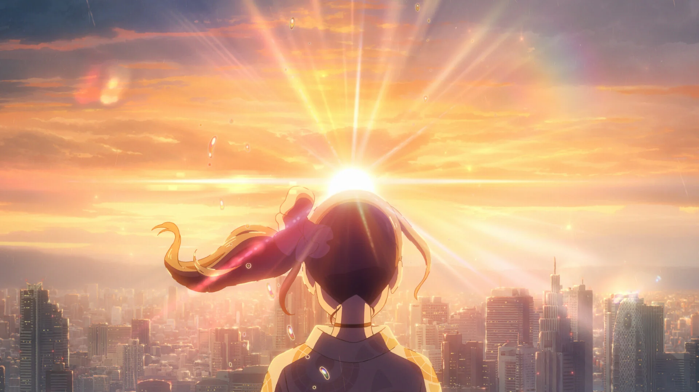

Today is a reminder of how much light you bring into the world, even on the days you feel a bit tired or heavy. Your strength isn't loud; it's the quiet way you keep moving forward.
You don't have to be strong every second. Even Hina needed someone to hold her hand. I'm right here.
— Nits